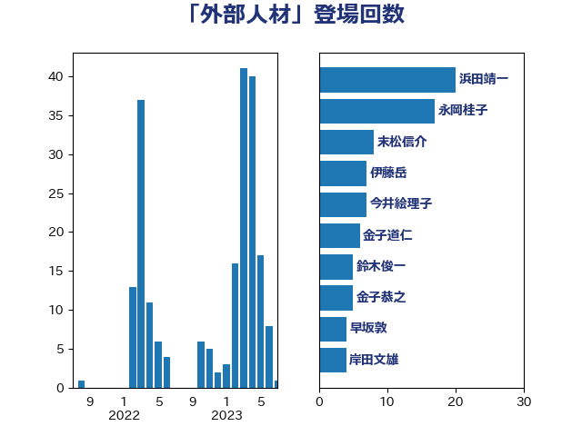

単語「外部人材」

| 浜田靖一 | 自由民主党 | 20 回 |
| 永岡桂子 | 自由民主党 | 17 回 |
| 末松信介 | 自由民主党 | 8 回 |
| 伊藤岳 | 日本共産党 | 7 回 |
| 今井絵理子 | 自由民主党 | 7 回 |
| 金子道仁 | 日本維新の会 | 6 回 |
| 鈴木俊一 | 自由民主党 | 5 回 |
| 金子恭之 | 自由民主党 | 5 回 |
| 早坂敦 | 日本維新の会 | 4 回 |
| 岸田文雄 | 自由民主党 | 4 回 |
| 堀場幸子 | 日本維新の会 | 4 回 |
| 鰐淵洋子 | 公明党 | 3 回 |
| 西村康稔 | 自由民主党 | 2 回 |
| 西岡秀子 | 国民民主党 | 2 回 |
| 竹内真二 | 公明党 | 2 回 |
| 田畑裕明 | 自由民主党 | 2 回 |
| 田中英之 | 自由民主党 | 2 回 |
| 牧島かれん | 自由民主党 | 2 回 |
| 庄子賢一 | 公明党 | 2 回 |
| 國重徹 | 公明党 | 2 回 |
| 佐藤啓 | 自由民主党 | 2 回 |
| 鬼木誠 | 立憲民主党 | 1 回 |
| 金村龍那 | 日本維新の会 | 1 回 |
| 金子俊平 | 自由民主党 | 1 回 |
| 重徳和彦 | 立憲民主党 | 1 回 |
| 道下大樹 | 立憲民主党 | 1 回 |
| 西田実仁 | 公明党 | 1 回 |
| 藤巻健太 | 日本維新の会 | 1 回 |
| 芳賀道也 | 国民民主党 | 1 回 |
| 羽田次郎 | 立憲民主党 | 1 回 |
| 秋葉賢也 | 自由民主党 | 1 回 |
| 田嶋要 | 立憲民主党 | 1 回 |
| 沢田良 | 日本維新の会 | 1 回 |
| 横沢高徳 | 立憲民主党 | 1 回 |
| 後藤茂之 | 自由民主党 | 1 回 |
| 山谷えり子 | 自由民主党 | 1 回 |
| 吉田宣弘 | 公明党 | 1 回 |
| 古川直季 | 自由民主党 | 1 回 |
| 伊藤孝恵 | 国民民主党 | 1 回 |
| 伊藤俊輔 | 立憲民主党 | 1 回 |
| 井上貴博 | 自由民主党 | 1 回 |
| 中曽根康隆 | 自由民主党 | 1 回 |
| 中川宏昌 | 公明党 | 1 回 |
| 下野六太 | 公明党 | 1 回 |